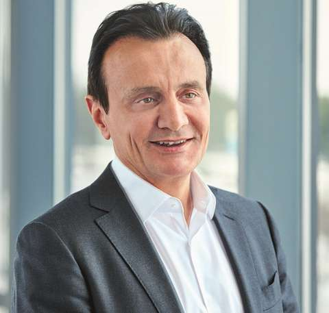

AstraZeneca's origin and sector
AstraZeneca is a British-Swedish multinational public limited company, headquartered in Cambridge, UK. It operates in the secondary and quaternary sectors, producing pharmaceutical products (such as the recent COVID-19 vaccinations), as well as performing scientific research.
AstraZeneca was founded through the merger between the Swedish and British pharmaceutical companies Astra AB and Zeneca Group. It is currently among the world's largest pharmaceutical companies, and has such purchased many smaller related companies, such as Cambridge Antibody Technology, MedImmune and Spirogen.

Public limited companies (PLCs)
A public limited company is an organisation that is publicly traded on a stock exchange. On the stock exchange, people can trade shares (very small ownership stake) of the company between each other in exchange for money. The main benefit of a PLC is that investors are only at risk of losing what they have invested, which is called limited liability.
If someone owns a share in a business, they own part of that business, and are entitled to dividends (portion of the company's annual profits), and to the right to vote in shareholder meetings. These shares, however, are one easy way for the PLC to generate extra revenue, as they receive the money which the share is sold for.
PLCs have some disadvantages, however. For example, anyone with a majority share of the company (e.g. controls over 50% of the shares) technically owns the company as a whole, as they can ensure that votes are always found in their favour due to that majority. This makes PLCs much more exposed to unexpected takeover attempts by their rivals.
Missions and aims
AstraZeneca's mission is to provide pharmaceutical products to cure debilitating conditions affecting people around the world.
They have several departments within the larger company, including Oncology and BioPharmaceuticals. Oncology's mission is to provide cures for every form of cancer, and to research the science behind cancer, as well as to develop and deliver monumental treatments in order to save the lives globally.
Products
AstraZeneca are most well-known for their recent participation in the fight against the Coronavirus (SARS-CoV-19 or COVID-19). For this, they partnered with Oxford University to produce the Oxford-AstraZeneca vaccinations, which were very widely used in the UK.
AstraZeneca have also produced a vast range of other pharmaceutical products, relating to (in order of sales revenue): cancer treatments ($10.9bn), cardiovascular diseases ($7.1bn), and respiratory illnesses ($5.4bn).
Their products attempt to fulfill their organisational mission, aims and objectives, all trying to prevent life-changing illnesses via medications and inoculations. The products are aimed towards those in need of medical treatment, and for medical organisations such as the National Health Service (NHS).
AstraZeneca worldwide
AstraZeneca is a global company, with its headquarters in Cambridge. They have 93 locations across the world, with 44 locations throughout Europe (spanning 30 countries), with 12 in the UK alone.
Across all locations, AZ have 76,100 employees as of 2020, which was a 7.8% increase over 2019's total of 70,600. Diveristy is a big factor in AztraZeneca's employees, with 46.9% of senior roles filled by women. 81% of employees believe that there is effective collaboration between teams inside AstraZeneca.
AstraZeneca benefit from this wide range of locations and high count of employees through their ability to recruit greater numbers of highly skilled workers in the required fields (biology and medicine), resulting in them being more easily able to conduct their life-saving research due to a greater range of knowledge throughout the organisation as a whole.
Key people
-

Pascal Soriot
Executive Director and Chief Executive Officer
-
Ezogelin Oflazoglu-Gruyters
Vice-President, Head of External R&D and Strategic Alliances, Oncology R&D
-
Mene Pangalos
Executive Vice-President, BioPharmaceuticals R&D
-
Maria Belvisi
Senior Vice President and Head of Research and Early Development, Respiratory, Inflammation and Autoimmunity, BioPharmaceuticals R&D
-
Helen Angell
Director, Translational Medicine, Oncology Research & Early Development
Financial analysis
2020 vs 2019
AstraZeneca had a much stronger financial year in 2020 compared to other PLCs. Their total revenue (money flowing into the business) was $26.6bn in 2020, which was an increase of approximately 10% over 2019 revenue ($24.4bn). Furthermore, their operating profits were 81% higher, at $5.2bn compared to $2.9bn in 2019 and $3.4bn in 2018.
AstraZeneca's increased revenue and profits may be seen as a result of the Coronavirus pandemic. However, during this, they donated PPE to companies and governments, rather than selling them. They also manufactured Oxford's Coronavirus vaccines, and sold them to the UK, India, Sweden and some European countries, but aiming to make zero or no profit on the sales whatsoever.
In fact, AstraZeneca's main revenue growth in 2020 was from their oncology (cancer research and treatment) department, which grew by 25% from $8.6bn to $10.9bn. Overall, product sales increased by 10% to $26.6bn, with 52% of this being from sales of their new medicines1.
Footnotes
-
1 - Tagrisso, Imfinzi, Lynparza, Calquence, Enhertu, Koselugo, Farxiga, Brilinta, Lokelma, roxadustat, Fasenra, Bevespi and Breztri.
AstraZeneca's success
AstraZeneca measures its success via how well it achieves its top priorities each year. Its official mission is to provide pharmaceutical products to cure debilitating conditions affecting people around the world. This year, it has definitely worked towards this mission with its aims and objectives.
AZ's COVID-19 vaccinations have helped to meet this goal. The COVID-19 pandemic is the most widespread infection in the last 100 years, killing 4.55 million people globally since it began. Vaccinations help to reduce the risk of infection, along with the severity of symptoms if an infection takes place.
Their vaccination programme was designed not to make any profits, meaning that any surplus made would be reinvested back into the vaccination programme rather than being paid to investors. This showed that their efforts were an attempt to make a difference in the world, rather than a pure money-making scheme. Their aim for this programme may have been to receive good PR for their deeds, but the rare side effects as a result of the vaccine (blood clots), along with the exaggeration by media, has meant that they have actually received bad PR.
In addition to their vaccinations, AstraZeneca have launched a total of 13 new medicines in 2020, further progressing towards their mission statement. Approximately 30% of their total product sales revenue was in emerging markets, too, where even simple medication can make a massive difference to people's livelihoods.
Furthermore, AstraZeneca has significantly increased its profits (up by 81% on 2019), due to significant increases in sales revenue from their pharmaceutical products. This can be seen as a positive for the company as a whole, and its shareholders, who received a total of $3.57bn in dividends in 2020. The dividend payout was a slight decrease on 2019, where the overall total was $3.59bn, but this is almost negligible. Additionally, AstraZeneca's share price has increased from approximately £53.71 per share in Jan 2019 to £88.26 in October 2021.
Overall, I would argue that AstraZeneca have achieved their aims and significantly progressed towards their mission in 2020 and 21H1. Their charitable actions in relation to the COVID-19 pandemic have allowed vaccine doses to be distributed at much lower cost (approximately £2.17/£1.56 per dose in UK and EU respectively) to countries which may not be able to afford the more expensive Pfizer-BioNTech or Moderna vaccines (approximately £15 and £24 per dose respectively), helping to fulfill their overall mission and aim.